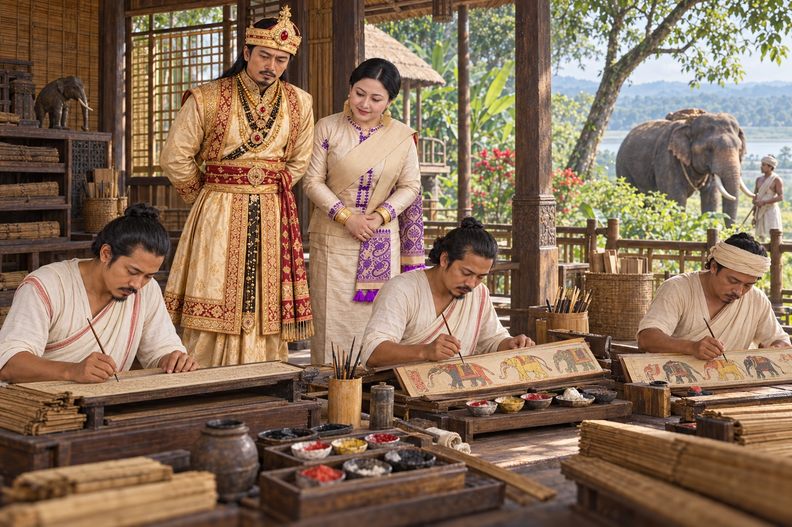

Painting of the Hastividyarnava
1734 · The Tungkhungia kings

Under Siva Singha and Queen Ambika, Sukumar Barkaith writes the Hastividyarnava, a treatise on royal elephants, illustrated by the painters Dilbar and Dosai.
Sources
People: Siva Singha (Sutanphaa), Ambika